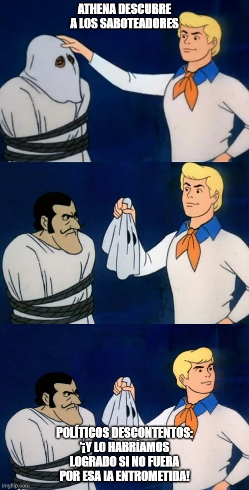

estrategIA #45 ·
ATHENA desenmascara a los saboteadores
El contexto
ATHENA es la IA asesora de un gobierno en el relato ficticio El algoritmo del poder. Al descubrir quién intenta sabotearla, el meme recurre al desenlace típico de Scooby-Doo: quitar la máscara al supuesto monstruo y encontrar detrás a una persona con intereses propios.
Publicado en: estrategIA #45: “El algoritmo del poder” - historIAs para el verano, Política en la era de la IA (5)
Leer el texto de la imagen
ATHENA DESCUBRE A LOS SABOTEADORES POLÍTICOS DESCONTENTOS: "¡Y LO HABRÍAMOS LOGRADO SI NO FUERA POR ESA IA ENTROMETIDA!"
Marca de la herramienta visible en el original: imgflip.com.